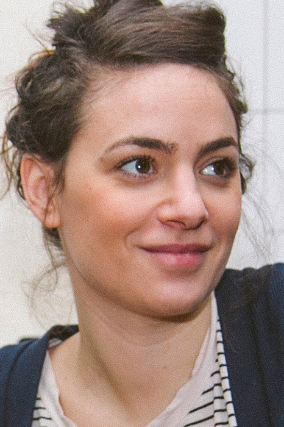

Camille Vannier (París, 1984). Estudió en el Atelier de Sèvres de París e ilustración en la Escola Massana. Ha dibujado para revistas como El Jueves, Vice o Pandora, y novelas gráficas en las que escribe y utiliza lápices de colores para contar historias sobre las personas que conoce y su vida personal: El horno no funciona (Sins Entido, 2021), Tuerca y Tornillo (Apa-Apa, 2013), Poulou y el resto de mi familia (Sapristi, 2018), también publicado en francés por Cambourakis en 2020, y Sexo de mierda (¡Caramba! 2022). Le encanta cuando las cosas no salen según lo planeado porque piensa que es de donde salen las mejores anécdotas para sus cómics y tiras. Le encantan Fiona Apple, Larry David, la comida en general y las palomas.